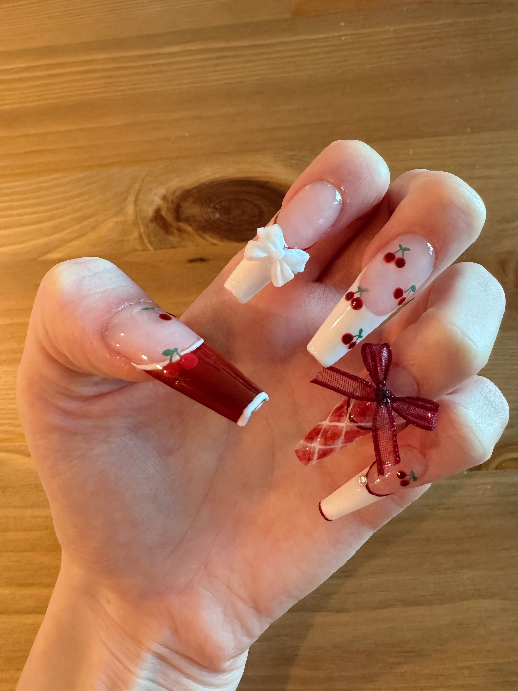

Welcome to my personal website!
This is where you can learn all about me and my interests.
About Me

Hello! I am Zixuan Wang. Passionate about the dynamic field of data science, I am a dedicated Data Scientist and Data Analyst fueled by an insatiable curiosity for uncovering valuable insights from intricate datasets. My expertise spans Machine Learning Algorithms, Data Visualization, and Statistical Analysis, honed through hands-on experience in executing projects ranging from Predictive modeling to Regression analysis and Data-Driven Decision-Making.
My journey into the realm of data-driven insights commenced during my undergraduate studies in Statistics, where I unearthed the transformative potential of data in addressing real-world challenges. Since then, I’ve embarked on a relentless quest to master the craft of data analysis, driven by an unwavering passion for leveraging data to foster innovation and tackle complex problems head-on.
I thrive on pushing the boundaries of what’s achievable in this ever-evolving field, driven by a deep-seated desire to make a meaningful impact through data-driven solutions. I am genuinely excited about the prospect of forging connections with fellow data enthusiasts, exchanging insights, and exploring avenues for collaborative ventures. Feel free to reach out - I’m always up for a chat!
My Technical Skills
Python, STATA, R Studio, MATLAB, SQL, Tableau, Google Analytics, AWS Relational Database Service (RDS), SQLite, Microsoft Office (PowerPoint, Excel, Word), HTML, Qlik Sense, Pandas, NumPy, SciPy, PyTorch, TensorFlow, Scikit-Learn, Spark, Flask, Django, Shiny, LLM, NLP
My Education
University of California, Los Angeles (UCLA)
- Degree & Program: Master of Applied Statistics and Data Science
- Year: 2022 - 2024
- GPA: 4.0 / 4.0
- Courses Taken: Mathematical Statistics, Computing and Programming, Applied Regression, Methods of Modern Stat, Probability Modeling, Data Management, Tools in Data Science, Machine Learning, Data Visualization, Models in Finance, Multivariate Statistics, Statistical Communication
University of California, Davis (UC Davis)
- Degree & Majors: Bachelor of Science with Double Majors in Statistics & Economics
- Year: 2018 - 2022
- GPA: 3.6 / 4.0
- Courses Taken:
- Statistics: Vector Analysis, Regression Analysis, Probability Theory, Abstract Math, Nonparametric Statistics, Analysis of Variance, Statistical Data Science, Applied Linear Algebra, Analysis of Categorical Data, Analysis of Econ Data, Applied Time Series Analysis, Data Technologies, Real Analysis, Math Statistics
- Economics: Econometrics, Decision Making, Financial Economics, Money and Banking, Uncertainty, Micro Theory, Macro Theory, International Public Economics, Economic History,
My Experience
Data Scientist Intern at HireBeat
- Date: July 2023 - September 2023
- Location: Jersey City, NJ, US
- Summary:
- Automated ETL pipelines in Python for job requisition and preprocessed data, facilitating Machine Learning modeling.
- Utilized Vectorization to extract skill-based keywords and conducted segmented Clustering on 15k+ resumes.
- Implemented an automated profile matching system for 10k+ job seekers and hiring entities, employing a multi-tenant scoring approach.
- Employed LangChain and OpenAI within Python to execute question answering and construct a proficient chatbot, resulting in a notable 45% enhancement in operational efficiency.
Data Analytics & Business Intelligence Intern at Siemens
- Date: July 2021 - August 2021
- Location: Beijing, China
- Department: IT Data Analytics
- Summary:
- Utilized Agile principles to implement SQL and Tableau solutions for KPI monitoring, driving a 9% increase in customer adoption through iterative development and responsive analysis.
- Created an automated Anomaly Detection model for 10+ key metrics, leading weekly stakeholder’s meetings to extract actionable insights for WeChat media promotions.
- Conducted in-depth Funnel Analysis to unveil underlying causes of metric fluctuations, providing data-driven recommendations for digital transition. Achieved an 8% rise in marketing performance and customer retention.
- Conducted quantitative analysis on stock performance, including log-return correlations and probability simulations using Time Series analysis. Constructed minimum variance and tangency portfolios, analyzing through CAPM and APT modeling.
- Contributed to the advancement of the DAYU Data Insight internal platform by conducting extensive Business Analysis, implementing A/B testing, and employing visualization techniques to drive data-oriented personalization.
- Applied the Kano Model and Classification to classify user requirements, providing a valuable reference for platform developers.
My Thesis
Statistical Models on Predicting Wildfire
- Date: January 2024 - Present
- Institute: UCLA
- Paper: still working on it!

My Projects
Multivariate Analysis of Pizza Dataset
- Date: January 2024 - March 2024
- Institute: UCLA
- Paper: GoogleDoc
- Abstract:
This study delves into the complex nutritional attributes of various pizza samples by analyzing data from ‘Pizza.csv’. Through multivariate analysis techniques including Principal Component Analysis (PCA) and Factor Analysis (FA), the research investigates the interrelationships between moisture, protein, fat, ash, sodium, carbohydrates, and calorie content per 100 grams of pizza. A comprehensive dataset comprising 300 samples and spanning nine variables enables a detailed nutritional profile assessment across different pizza brands.
The PCA results highlight the dominant variables influencing pizza nutrition, with carbohydrates, moisture, and fat exhibiting substantial variance. PCA reveals that the first two principal components collectively explain 92.32% of the total sample variance, suggesting strong data representation. PC1 primarily represents nutrient density, while PC2 reflects caloric hydration. FA further uncovers underlying factors explaining correlations among nutritional variables, revealing distinct dimensions of nutritional composition, such as overall composition, moisture distribution, and nutrient contrasts.
Applying varimax rotation to the factor solution enhances the clarity and interpretability of nutritional patterns. Despite a slight decrease in explained variance post-rotation, the redistributed variance enhances factor interpretability. The Maximum Likelihood Estimates (MLE) approach corroborates PCA findings, underscoring the significance of certain nutritional dimensions common across pizzas.
Overall, this study provides valuable insights for consumers, industry professionals, and policymakers regarding pizza nutrition. While acknowledging study limitations, such as potential dataset biases, future research avenues could explore additional factors influencing nutritional composition and integrate qualitative data for enhanced understanding. By leveraging multivariate statistical techniques, this research contributes to a nuanced understanding of pizza nutrition and lays a foundation for further investigation.
Portfolio Construction and Risk Assessment in Financial Markets
- Date: January 2024 - March 2024
- Institute: UCLA
- Paper: GoogleDoc
- Summary:
This stock data in this porject spans from January 2012 to December 2023 and the project goal involves constructing portfolios comprising stocks, ETFs, and risk-free assets, rebalancing them semi-annually. The portfolios include minimum variance, tangency, and targeted return portfolios.
The analysis evaluates portfolio Sharpe ratios and sectoral weights over time, examines portfolio pricing relative to the market, calculates Value at Risk (VaR) and confidence intervals for 1-day horizon, and extends VaR analysis for a 6-month horizon.
Additionally, the project explores the relationship between the price of a zero-coupon bond and prevailing interest rates.
Overall, the project offers insights into portfolio management, asset pricing, and risk assessment techniques in financial markets.
Prediction of CO2 Emissions of Cars
- Date: September 2022 - November 2022
- Institute: UCLA
- Paper: GoogleDoc
- Summary:
- Conducted CO2 emissions prediction for Canadian car sales in 2022, utilizing Linear Regression on 946 observations with 5 predictors.
- Investigated interaction effects between variables, enhancing model depth and predictive accuracy.
- Utilized ANOVA table for significant predictor selection, incorporating Cross-Validation to compare model performance.
- Ensured model validity through comprehensive assumption checks: residual plots, normal QQ plots, scale location plots, variance inflation factor analysis, Fisher Test, and Non-constant Variance Score Test.
- Determined the optimal model, concluding a 10% increase in engine size correlates with a 4.863% rise in car CO2 emissions (g/km).
Key Indicators of Heart Disease
- Date: November 2022 - December 2022
- Institute: UCLA
- Paper: GoogleDoc
- Summary:
- Conducted a thorough investigation of 17 variables to discern their significant impact on heart disease likelihood.
- Expertly managed outliers, assessed influential points, and addressed multicollinearity concerns. Employed Random Forest feature selection to determine key predictors.
- Generated and presented informative visuals, such as odds ratio, residual plots, marginal model plot, and ROC curve, to stakeholders.
- Formulated and meticulously compared diverse logistic models, calculating essential metrics including AUC, accuracy, and Pseudo R-squared to gauge model performance.
Rent Forecasting: An Analysis on the Classified Apartment for Rent in the USA
- Date: September 2023 - November 2023
- Institute: UCLA
- Paper: GoogleDoc
- Summary:
- Predicted the price per square footage using linear regression model using factors: number of bedroom, number of bathroom, and states.
- Deeply investigate California and Texas state and add major cities in the two states.
- Check assumptions of linearity, normality, homoscedasticity, and outliers by using the plot function in R.
- Create data visualization of the predicted price per square footage by using ggplot
My Dog!!
His name is DaBai. He is 8 years old! 
My Life
Traveling
I love exploring new places and experiencing different cultures. Here's a photo from my recent trip to Miami. I really like beaches. I also went to Cancun, Hawaii, Maldives, Phuket Island, Hainan, Okinawa, and Jeju before.
Badminton

Badminton is one of my favorite sports. It's a great way to stay active and have fun with friends.
Mahjong
I enjoy playing Mahjong with family and friends. It's a fun and strategic game that brings people together.
Gaming
I enjoy playing Honor of Kings when I have free time. I ranked in the top 100 in Haidian, Beijing.
Nails
I do a lot of pretty nail designs for myself.